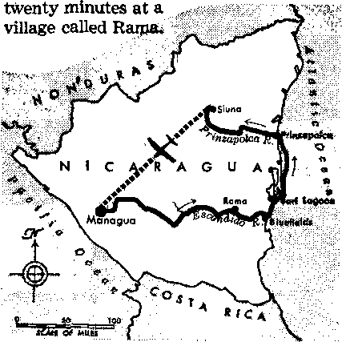
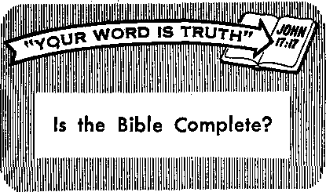

Can Future Events Be Accurately Predicted?
PAGE 5
The Clergy in Politics—World Wide
PAGE IB
Diving with “Scuba”
PAGE 17
Paper for a Special Purpose
PAG EE 2 1
AUGUST 8, 1966
THE REASON FOR THIS MAGAZINE
Newt sources that qre able to keep you awake to the vital issues of our times (must be unfettered by censorship and selfish interests, "Awakel" has no fetters. It recognizes facts, faces facts, is free to publish facts. If It not bound by politico! ties; it Is unhampered by traditional creeds. This magazine keeps itself free, that it may speak freely to you. But it does not abuse its freedom. It maintains integrity to truth.
The viewpoint of ‘‘Awakel" is not narrow, but is international. "Awakel" has its own correspondents in scores of nations. Its articles are read in many lands, in many languages, by millions of persons.
In every issue "Awake!" presents vital topics on which you should be informed. It features penetrating articles on social conditions and offers sound counsel for meeting the problems of everydpy life. Current news from every continent passes In quick review. Attention is focused on activities in the fields of government and commerce about which you should know. Straightforward discussions of religious issues alert you to matters of vital concern. Customs and people in many lands, the marvels of creation, practical sciences and points of human interest are all embraced tn its coverage. "Awake!” provides wholesome, instructive reading for every member of the family.
"Awake!" pledges itself to righteous principles, to exposing hidden foes and subtle dangers, to championing freedom for all, to comforting'mourners and strengthening those disheartened by the failures of a delinquent world, reflecting sure hope for the establishment of God’s righteous new order in this generation.
Get acquainted with "Awake!" Keep awake by reading "Awake!'*
■W ■ J—. i .. U,,
Published StuuLTAHnoneLY in the United States bt thh WATCHTOWER BIBLE AND TRACT SOCIETY OF NEW YORK, INC. 117 Adams Street Brooklyn, N.Y. 11201, U.S.A.
and in England WATCH TOWER BIBLE AND TRACT SOCIETY
Watch Tower House, The Ridgeway London N.W. 7, England N. H. Knorb, President Gsant Suites, Secretary
Average printing each issue: 4,475,000 44 a nnr (Antral li, 5c; Snth Africa, 3IZt«)
Yearly aubfieriptlGD nrtec Meet for semimonthly editions
AmctIm, U.S., 117 Adana Stmt. Brooklyn, NX 11201 Jl AlStralla, 11 Beresford Rd., Stritbfleld, N.&W.
Canada, ISO Bridgeland Ate., Toronto IS, Ont
EfifllancL Watch Tower House.
Kew Zealand, 621 New North Rd., Auckland B.W. 1 7/-SHth Africa, private Baj 2, P.O. Ehodafontehi, TvL 70c
(Monthly ailtlodi cod half the ahwi rata.) RffllttaaMi for aubacriptlona should be sent to the office in your country. Otherwise send your to Brepkiyu.
Nutlet af axilration la sent at least two issues before subscriptioD eiplree. ’
Now published in 26 languages Setllmffithly—AfrikwiB, Cebuano, Danish, Dutch, English, Finnish, French^ German, Greek, Hoke, Italian, Japanese, Korean, Norwegian, Portuguese, Spanish, Swedish, Tagalog, Zulu.
Mmthly—Chinese, Cinyanjs, HiHgsyncn, Malayalam, Polish, Tamil, Ukrainian.
CHANGES OF ADDRESS thohld rut) ct thirty days befict yw aiwlm date. Site sb year eld and anr addrm (If tottlblt, year old address label), write Watch Tower, Watch Tower House, The Ridgeway, London N.W. 7, Enitaid.
Entered aa second-class matter at Brooklyn, N.Y. printed In England
The -Bible translation reialarly used In "Awaket” Is the New World Trantlatlon of the Holy Scriotrra, 1961 edition. WhM ather translations are used, thio Is tleariy marked.
|
Avoid a Great Stumbling Block |
3 |
Diving with “Scuba" |
|
Can Future Events Be Accurately |
Paper for a Special Purpose | |
|
Predicted? |
5 |
Ministry Instead of Manager |
|
When Preaching Becomes an Adventure |
9 |
"Your Word Is Truth” |
|
Pastor Turns Bricklayer |
12 |
Is the Bible Complete? |
|
The Clergy in Politics—World Wide |
13 |
Watchiggithe World |
THE exercise and development of the intellect is essential to the fullest happiness of humans. The ability to think was created in us, and there is a boundless field in which the human mind is free to conduct its explorations. Deprived of such broadening activity, the mind tends to become sluggish and the person inclines toward credulousness and superstition. Developing the thinking ability, on the other band, offers rich rewards.
In connection with intellectual development, however, we do well to be on guard against a stumbling block that is all the more dangerous because of its insidiousness. The mind can be led gradually to take great pride in human genius. Pride, in fact, can lead to a sort of worship of the intellect. It can undermine the proper humility of the creature before the Creator. It can lead one to give too much weight to the established opinions of the learned. It can result in one’s refusing to pay attention to vital information.
In the days of Jesus the learned scribes and doctors of the Jews, for all their intellectual advantages, adopted an attitude that of itself shut them off from life-giving knowledge. Probably they originated the contemptuous question: "The Christ is not actually coming out of [the remote hill country of] Galilee, is he?” (John 7:41) To one who insisted
f that Jesus must be someone sent from God, they burst out angrily: “You were altogether bom in sins, and yet are you teaching us?” (John 9:34) They refused to descend from their intellectual eminence and learn the simple but beautiful truths spdken by Jesus. They were badly, stumbled.
We have other instances of pride and its evil effects among the early Greek and Roman men of letters. The historian Tacitus made record of the unsupported claim that the Jews worshiped the effigy of an ass. Later, the moralist Plutarch echoed the ridiculous idea. (Tacitus’ History, Book 5, chapter 2; Plutarch’s Symposium, Book 4, Quest. 5) Better informed people today know that the charge is unfounded. Had not those intellectuals taken the trouble to investigate before passing this lie on to posterity? The absence of any evidence for their conclusion convicts them of prejudice—judging a matter without first having heard it fully.
Tacitus ..also referred to Christianity as a “pernicious superstition.” (Annals, Book 15, par. 44) Why? Evidently he had not bothered to locate and read the basic teachings of the new religion, such as the record of Jesus’ sermon on the mountain. Had he deigned to make such an inquiry he could not honestly have written what he did. His verdict, given without amplification or explanation, again convicts him o£,prejudice and pride. Did he get his information from Christianity’s foes? Was he simply parroting the official opinion that prevailed in learned circles?
Numerous other pagan writers had nothing to say about Christianity, though they must have been aware that people were paying with their lives in the arena for this new faith. Perhaps they felt they knew enough about it when they learned that its tenets differed quite radically from the accepted opinions of the day. Intellectual pride prevented them from looking into the kind of faith for which people were willing to give their lives. Would not noble minds have sought to know why?
A modern historian presents another example of intellectual pride. Referring to the Goths in Spain, he wrote: “They were coarse, illiterate, and stupid as carps; moreover, they were not Christians, they were Arians, and they were Arians precisely as they were Goths—-they were born so.” (History of Spain, Archibald Wilberforce, page 14) The conclusion that Arians were not Christians was that adopted by intolerant Athanasians in the great church controversy over the Trinity that raged in Constantine’s time. In much the same way today the intolerant person will charge the one not believing in the trinity with being a heretic and, therefore, no true Christian.
Had the writer referred to above studied and compared those opposing teachings with the authority of the Bible, and offered reasons for his conclusion, readers would be in position to exercise*thcir own judgment. He not having done so, we must conclude that he was prejudiced against Arianism. Was he parroting the view of earlier church historians, or was he relying on the consensus of orthodox scholars, like the Jews in the time of Jesus?
If you were to consult a religious encyclopedia under the heading “Arius,” you would likely read that he was a heresiarch, a chief of heretics, a troublemaker, a blasphemer. If untainted by intellectual pride, you would note that most of the sources for the article were by writers inimical to Arius, “those who held firmly to the orthodox consensus, right or wrong. Surely, then, you would want to get the testimony of Arius himself or of some of his friends. You would want to hear him out instead of shutting your ears and yelling as the “learned” doctors of the church did when he was offering his testimony.
How do you react to similar situations? When you read in the news that a certain group of Christians believes, thinks and acts quite differently from the orthodox groups, do you hastily conclude that they must be a bunch of cranks? Do you immediately condemn them, saying you have heard all you want to hear? Do you accept what their enemies say about them? Or, are you sufficiently free of intellectual pride to want to know more about them before reaching a conclusion? This is the nobler course, and puts you in no danger of the humiliation referred to by the wise man at Proverbs 18:13: “When anyone is replying to a matter before he hears it, that is foolishness on his part and a humiliation.”
How saddening it is to see an otherwise bright and active intellect stooping to share the prejudices of the ignorant and the uneducated! Far better it is to suspend judgment on a matter until both sides have been fully and fairly heard. By going to the only dependable authority, God’s Word the Bible, you can avoid the dangerous stumbling block of intellectual pride.
A CCU RAT
IN June of 1503 two waterlogged vessels limped into a bay on the north coast of the West Indies island of Jamaica. About a year before, Christopher Columbus had set sail from Spain with four ships on his final voyage to the “New j World.” Now, after I months of exploration along the coast of Central
PREDICTED?
America, Columbus was forced to abandon two of his vessels and, shortly later, managed to beach on Jamaica.
At first the Island’s natives received the explorers with kindness, providing them with necessary supplies. But after a while the misconduct of the Europeans alienated the natives, who refused to continue supplying them with food. The situation was critical. It would be some time before another ship arrived to pick up the stranded explorers. However, by making an accurate prediction of a future event Columbus was able to regain the favor of the Indians.
By consulting his almanac, Columbus learned that there was to be a total eclipse of the moon on February 29, 1504. So he told the Indians that the light from the moon would be removed unless they supplied the explorers with plenty of cassava, com and fish. The Indians gave little credence to the prediction, but before the eclipse was complete they “with great howling and lamentation came running from every direction to the ships laden with provisions.” For the remainder of their stay Columbus and his men were provided with necessary supplies.
Many people today have an attitude similar to those Indians when it comes to the matter of predicting future events. For instance, when a person opens the Bible to point out its prophecies concerning our day and what lies ahead, many are skeptical. They do \ not believe it is pos-I sible to predict
events. Frequently it is those who view themselves as
better educated who are more skeptical than others. As they often say, “No one knows the future.” But to those well acquainted with the facts of science, prediction is very real.
Accurate Predictions
Through observation and a fundamental knowledge of the laws that govern the movement of heavenly bodies, astronomers have long been able to predict celestial phenomena accurately. For example, by observing a variation in the course of the planet Uranus, it was believed by some astronomers that its orbit was being affected by a yet more distant undiscovered planet. The World Book Encyclopedia (1966) explains:
“John C. Adams (1819-1892) of England and Urbain Leverrier (1811-1877) of France figured out where the new planet ought to be. In 1846, Leverrier sent his prediction to a German astronomer, Johann G. Galle (1812-1910). Galle immediately searched for the planet with the help of his young assistant, H. L. d’Arrest (1822-1875). They found the planet in the predicted place. Astronomers named it Neptune.” This is merely one of the more
IN June of waterlogged vessels limped into a bay on the north coast of the West Indies island of Jamaica. About a year before, Christopher Columbus had set sail from Spain with four ships on his final voyage to the “New i World.” Now, after | months of exploration along the coast of Central America, Columbus was forced to abandon two of his vessels and, shortly later, managed to beach on Jamaica.
At first the Island’s natives received the explorers with kindness, providing them with necessary supplies. But after a while the misconduct of the Europeans alienated the natives, who refused to continue supplying them with food. The situation was critical. It would be some time before another ship arrived to pick up the stranded explorers. However, by making an accurate prediction of a future event Columbus was able to regain the favor of the Indians.
By consulting his almanac, Columbus learned that there was to be a total eclipse of the moon on February 29, 1504. So he told the Indians that the light from the moon would be removed unless they supplied the explorers with plenty of cassava, com and fish. The Indians gave little credence to the prediction, but before the eclipse was complete they “with great howling and lamentation came running from every direction to the ships laden with provisions.” For the remainder of their stay Columbus and his men were provided with necessary supplies.
Many people today have an attitude similar to those Indians when it comes to the matter of predicting future events. For instance, when a person opens the Bible to point out its prophecies concerning our day and what lies ahead, many are skeptical. They do not believe it is possible to predict events. Frequently it is those who view themselves as better educated who are more skeptical than others. As they often say, “No one knows the future.” But to those well acquainted with the facts of science, prediction is very real.
ACCURATEUV PREDICTED?
Accurate Predictions
Through observation and a fundamental knowledge of the laws that govern the movement of heavenly bodies, astronomers have long been able to predict celestial phenomena accurately. For example, by observing a variation in the course of the planet Uranus, it was believed by some astronomers that its orbit was being affected by a yet more distant undiscovered planet. The World Book Encyclopedia (1966) explains:
“John C. Adams (1819-1892) of England and Urbain Leverrier (1811-1877) of France figured out where the new planet ought to be. In 1846, Leverrier sent his prediction to a German astronomer, Johann G. Galle (1812-1910). Galle immediately searched for the planet with the help of his young assistant, H. L. d’Arrest (1822-1875). They found the planet in the predicted place. Astronomers named it Neptune.” This is merely one of the more lives at a given time, and able to solve them, would have a complete survey of all events, future and past,”
ARTICLES IN THE NEXT ISSUE
• Why DA Clergymen Etpouee Secular Cauiee?
• A maxi ng Relatlonahlp* Among Earth’* Creature*.
• What Atwut the Education of Women?
* Fight for Faith Rewarded.
Thus scientific men recognize the possibility of predicting the future; in fact, in predicting all events that are yet to occur. Obviously, however, no human can predict all events; man is not in position to assemble all the necessary Information. Does tt-As mean Uhat weJa predictions are Impossible? For man, yes. But there is One who possesses the knowledge, wisdom and understanding required to have a complete comprehension of all events, including those that are yet to occur.
The God of Prophecy
The marvelous law and order that govern the material universe eloquently bespeak such an Intelligent One who possesses this ability. Skepticism, however, is often caused by the vast number of false prophets who, by their erroneous predictions, have brought the matter into disrepute. Other persons are inclined to put all predictions into the same category as those of the astrologer Nostradamus; whose prophecies, one encyclopedia said, "were intentionally obscure and vagpe and are open to many interpretations.”
Nevertheless, an honest examination of the prophecies within the Holy Bible will reveal that they are entirely different. They are even more accurate than reliable predictions of human scientists. This is because they originate with the All-Powerful, Intelligent One who put into operation the marvelous laws of the universe. Yes, the same One who initiated the laws on the basis of which men can accurately predict events affected by the orderly movement of celestial bodies!
That he has the ability to foretell the future accurately, the Bible's Author, Jehovah God, himself proclaims: "I am the Divine One and there is no other God, nor anyone like me; the One telling from the beginning the finale, and from long ago the things that have not been done.” Jehovah challenges others to match him in his powers of prophecy, saying: “Produce an& tell to us the things that are going to happen. Hie first things—what they were—do tell, that we may apply our heart and know the future of them. Or cause us to hear even the things that are coming. Tell the things that are to come afterward, that we may know that you are gods.”—Isa. 46:9, 10; 41:22, 23.
While man, with a knowledge of certain laws set In operation by God, can make some accurate predictions, these are extremely limited. However, they do help a person to appreciate that Jehovah God, who not only possesses all the facts but, in addition, can control all the factors, is unlimited in his powers of prophecy. He is in position to govern the outcome of affairs in harmony with His will!
fteltabU bp God
For example, long in advance Jehovah God foretold the rise and fall of world powers that have dominated earth’s affairs. No human could possibly have done this. Under His inspiration, the Hebrew prophet Isaiah prophesied in the eighth century B.C.E. that Cyrus the Persian would serve as liberator of the captive Israelites from Babylon. This prediction was made many years before Cyrus was even bom! God also gave details of the conquest, saying that the river would be dried up and the city gates would be left open. Nearly two hundred years later Cyrus marched into Babylon, exactly as foretold!—Isa. 44:26-45:3.
When Babylon appeared unconquerable, God foretold through his prophet Daniel the rise of the Medo-Persian World Power. More than that, in unmistakable terms he told about the coming to prominence of the next world power, Greece, its conquest of Medo-Persia, and, in time, its dissolution into four smaller empires after the death of its conquering king, Alexander the Great. Here is how Jehovah God in vision to Daniel revealed in advance these events of history:
“I saw, and, look! a ram standing before the watercourse, and it had two horns. ... I saw the ram making thrusts to the west and to the north and to the south, and no wild beasts kept standing before it, . . . and, look! there was fl male of the goats coming from the sunset upon the surface of the whole earth . . . And as regards the he-goat, there was a conspicuous horn between its eyes. And it kept coming all the way to the ram possessing the two horns, which I had seen standing before the watercourse; and ft came running toward it in its powerful rage. . . . and it proceeded to strike down the ram and to break its two horns . . . And the male of the goats, for its part, put on great airs to an extreme; but as soon as it became mighty, the great horn was broken, and there proceeded to come up conspicuously four instead of it, toward the four winds of the heavens.”
Leaving no mistake about the meaning of this prophecy, Jehovah God went on to tell Daniel: “The ram that yflu saw possessing the two horns stands for the kings of Media and Persia. And the hairy he-goat stands for the king of Greece; and as for the great horn that was between its eyes, it stands tor tne nrst King. [.Alexander the Great was that “first king” after Greece’s rise to world power.] And that one having been broken, so that there were four that finally stood up instead of it, there are four kingdoms from his nation that will stand up, but not with his power.”—Dan. 8:3-8, 20-22.
Any person familiar with history will recognize that these prophecies were fulfilled in the smallest details. This is not a case of where some few forecasts came true, as sometimes occurs in the case of predictions by experts in political history. Not at all! But all of God’s prophecies are fulfilled! In fact, the entire course of history of these nations from Babylon down to the present has been foretold and fulfilled. Major prophecies in God’s Word are even coming to pass today. Read what the Bible has to say about the “last days” or “conclusion of the system of things” recorded in 2 Timothy 3:1-5 and Matthew 24:3-14, and note their fulfillment in the very conditions now existing.
But, happily, God points forward to yet future events. According to divine prophecy, soon now, within this generation of mankind, a global destruction comparable to the Noachian flood will completely wipe out wicked mankind. Only those who, like Noah and his associates, seek to walk with God by keeping his commandments will be preserved through alive. (Matt. 24:32-39; Ps. 37:9-11) Then, under the righteous rule of God’s promised kingdom, a time of perfect peace and happiness will be realized. (Isa. 11:6-9; Rev. 21:3, 4) Do not scoff at such prophecies! Examine God’s past record of fulfilled prophecies, and see that not once has he been wrong. Therefore, trust in His Word and pattern your life in harmony with it.
$%^*e
■? w in Nicaragua v
■>
<>V’>VV««fr4j
£
^^.'•^*«->-> ■»■:•■» ■w^w?fr» ■«->>>»»*»*♦« fr»**4<-»»4*;'»***»«>*
AT A recent district assembly of Jehovah’s witnesses in Managua, it was explained that 50 percent of Nicaragua is not the assigned preaching territory of any congregation of Jehovah’s witnesses in Nicaragua. !£ix missionaries pondered over this information and decided to spend two weeks in visiting people in the interior and along the east coast of this unassigned territory to acquaint them with Jehovah’s witnesses and the Bible’s teaching. After completing their unusual and adventuresome journey each of the six missionaries wrote a report to the branch office of the Watch Tower Society. Following are a few of the experiences and highlights of their 600-mile trip:
It all began when the branch office invited some of us to take a two-week trip out into parts of our country hitherto unreached by the message of God’s kingdom. Plans were made well ahead of time. Literature was ordered and sent to outlying places, where possible, in sufficient quantities. What to take in the way of bedding and clothing was decided upon, with emphasis placed on traveling light A meeting was held and duties w^re assigned the night before we Ipft Managua. Our trip by land, one usually made only by air, through the interior of Nicaragua to the east coast, was soon to begin.
in Nicaragua
Making the Most of Boat Stops
We left at 4 a.m. Thursday in a small panel truck converted into a bus. There were seventeen crowded passengers and the driver. Six hours and one blowout later we reached the end of the gravel road, where we were to board a riverboat that would take us the remaining distance to Bluefields, a small city on the Atlantic Coast side of the country. With two hours to wait for the riverboat we initiated our ministerial program by giving short sermons and offering Bible literature to the people living at this junction, Many had never heard of our Bible work before but responded with appreciation, accepting the literature readily.
On the boat we made only one stop down the sixty-mile serpentine Rio Escondido, or bidden River. Here the boat was to remain for only
We were organized to talk to people on the first street we came to, three on either side. Surprisingly, ten books were placed in this time before rushing back to the boat.
The river trip was very relaxing and peaceful. Even the alligators were tranquil during the midday period, but not the monkeys. Above the throb of the motor we could hear their cry of protest at being disturbed by the intrusion of modern transportation. Glimpses of them could be seen over the top of the vine-entangled jungle. The silent river, banked by a solid curtain of green, was beautiful to behold; yet we experienced a foreboding j nsation as we wondered what would happen if we became lost in such a jumble of jungle greenery, haunted by boa constrictors and spotted leopards. Nighttime overtook us at Bluefields. When the riverboat captain learned of our work and that we were missionaries, he refused to accept any payment lor the passage.
The following morning we learned that there would be no boat going that day to Pearl Lagoon, our next stop. Quickly we decided to penetrate another previously unvisited territory, a fishing village across the bay. The humble folk there demonstrated a remarkable interest in the Bible. One man from Spain was overjoyed to find a Bible-based religion that kept separate from politics and did not desire greedily to gather up the industries and -the best lands. Many implored us to return again soon to help them learn more of the promises of God’s Word. Repeatedly they would ask us what additional literature we had or could send then} to further their spiritual knowledge of Jehovah’s will. God may be dead in the hearts of many who glory only in man’s achievements, but he is very much alive to these people who live a simple life surrounded by His handiwork. We took 104 books and Bibles to these people, and when we left a short five hours later we were empty-handed.
The next morning we boarded a launch to continue our journey. Snaking our way through a twisting canal, we, at times, had to bend low as the interlocking branches and vines tried to pluck us from, the boat. Only the chug of the engine broke the silence of this hidden paradise secluded deep in a rain forest. We had a momentary delay when one of the missionaries stood on the steering cable causing the rudder to jam; instead of making the next sharp turn we ran straight into the bank. But we were soon again on our way to Pearl Lagoon, arriving there that evening.
Hospitality and Suitcases of Literature
Everywhere we went people were very hospitable, opening up their homes or moving out and letting us have their accommodations; for a place to eat or sleep we never lacked. At the Lagoon we found lodgings just before dark. The owner turned his son’s house over to us. Only half a dozen houses in the community enjoy electricity and this was one of them. They also provided us excellent meals at a very reasonable cost.
The two principal religions in the community are Roman Catholic and Moravian. Even the religious leaders accepted literature, considering us authorities on the Bible.
Bibles and literature were so readily accepted that we carried suitcases and cartons instead of briefcases as we taught the people and offered them additional Bible publications. Bible studies were started and conducted by flashlight or coal-oil lamps. Two of us placed five books and several, magazines while trying to locate an interested person spoken to previously. One man, after taking six books and a Bible, begged for more instruction and pleaded with us to stay longer.
The town's theater was gladly donated We were organized to talk to people on the first street we came to, three on either side. Surprisingly, ten books were placed in this time before rushing back to the boat.
The river trip was very relaxing and peaceful. Even the alligators were tranquil during the midday period, but not the monkeys. Above the throb of the motor we could hear their cry of protest at being disturbed by the intrusion of modern transportation. Glimpses of them could be seen over the top of the vine-entangled jungle. The silent river, banked by a solid curtain of green, was beautiful to behold; yet we experienced a foreboding j nsation as we wondered what would happen if we became lost in such a jumble of jungle greenery, haunted by boa constrictors and spotted leopards. Nighttime overtook us at Bluefields. When the riverboat captain learned of our work and that we were missionaries, he refused to accept any payment lor the passage.
The following morning we learned that there would be no boat going that day to Pearl Lagoon, our next stop. Quickly we decided to penetrate another previously unvisited territory, a fishing village across the bay. The humble folk there demonstrated a remarkable interest in the Bible. One man from Spain was overjoyed to find a Bible-based religion that kept separate from politics and did not desire greedily to gather up the industries and -the best lands. Many implored us to return again soon to help them learn more of the promises of God’s Word. Repeatedly they would ask us what additional literature we had or could send then} to further their spiritual knowledge of Jehovah’s will. God may be dead in the hearts of many who glory only in man’s achievements, but he is very much alive to these people who live a simple life surrounded by His handiwork. We took 104 books and Bibles to these people, and when we left a short five hours later we were empty-handed.
The next morning we boarded a launch to continue our journey. Snaking our way through a twisting canal, we, at times, had to bend low as the interlocking branches and vines tried to pluck us from, the boat. Only the chug of the engine broke the silence of this hidden paradise secluded deep in a rain forest. We had a momentary delay when one of the missionaries stood on the steering cable causing the rudder to jam; instead of making the next sharp turn we ran straight into the bank. But we were soon again on our way to Pearl Lagoon, arriving there that evening.
Hospitality and Suitcases of Literature
Everywhere we went people were very hospitable, opening up their homes or moving out and letting us have their accommodations; for a place to eat or sleep we never lacked. At the Lagoon we found lodgings just before dark. The owner turned his son’s house over to us. Only half a dozen houses in the community enjoy electricity and this was one of them. They also provided us excellent meals at a very reasonable cost.
The two principal religions in the community are Roman Catholic and Moravian. Even the religious leaders accepted literature, considering us authorities on the Bible.
Bibles and literature were so readily accepted that we carried suitcases and cartons instead of briefcases as we taught the people and offered them additional Bible publications. Bible studies were started and conducted by flashlight or coal-oil lamps. Two of us placed five books and several, magazines while trying to locate an interested person spoken to previously. One man, after taking six books and a Bible, begged for more instruction and pleaded with us to stay longer.
The town's theater was gladly donated to see his sister and to arrange with her our necessary meals. His introduction to her was: “They come to see you about the belly business.” And so with these few sincere words the arrangements were made for us.
Penetrating Deeper into Remote Areas
From Tasbapone we were fortunate enough to contract for a forty-two-foot launch, used for the purpose of hauling coconuts, for the next part of our journey. Very few boats pass by this remote section, and our next destination was some fifty miles to the north. Our passage lasted ten hours until we arrived at the village of Prinzapolca, located at the mouth of the large Prinzapolca River. As we approached, the ocean was churning with heavy swells. It seemed we were either looking down at the sea or up at the sky. Most of the turtle liver found its way back to the sea from where it came.
When we did finally arrive at the wharf we found it too high for us, as it was built for oceangoing cargo vessels by a mining company whose ships load ore from this location. As we were bobbing up and down at the side of the towering wharf we finally decided to form a human chain to unload our cargo, since no ladder was available. This we were able to do, with the only loss being an umbrella, which was fumbled overboard.
The mining company not only located free lodgings for us during the two days we remained there, but also gave us passes to ride the ore barge up the river. Then, deep in the interior, the ore barge meets the ore trucks that travel down from the mines. Thus, we were able to penetrate deep into territory where no Witness appears to have ever preached before. Considering that much free transportation was arranged for us and that the national airline generously granted us a discount on our retufn flight from the mining town, our expenses were far less than anticipated.
A few days before we arrived at the mining town of Siuna, a fire had ravaged a section of the business district and a great deal of looting took place, thus adding to the loss brought about by the fire. The community appreciated /the comforting hope of a restored paradise on earth and enthusiastically accepted 235 Bibles and books, as well as magazines and booklets, during our three-day stay.
That final quantity of literature placed increased the number of Bibles and Bible books distributed during the two weeks to a total of 823. This does not take into consideration the hundreds of magazines and booklets that were also placed. Only one person during our entire two-week trip failed to invite us in or listen to the good news of Jehovah’s kingdom. It was with appreciative hearts and with thankfulness to Jehovah that we boarded the plane and winged toward home, thus to end an adventure of a lifetime.
'Tu.tni .Sticklayei
One of Jehovah's witnesses accepted an invitation to give a talk in the home of the director of the Pentecostal Church in Prado, Bahia, Brazil. With all the members of the church present, the Witness was asked to speak on tithing. He pointed out from the Bible that though the Jews were under obligation to tithe,
Christians are not. Christ’s death eliminated the need for God’s servants to keep the tithing laws.—Lev. 27:30,32; Col. 2:13,14; Rom. 6:14.
After the talk the tithes paid to the church began to fall off, more and more; until, as a result, the pastor left the church and went to be a bricklayer in a nearby town.
LOOK where we will, the clergy are active in politics. Is there social unrest, or racial strife, or political,
campaigning or turmoil? You may be certain that the clergy are involved, bringing pressure to bear, on one side or the other, or on both sides.
For example, the New York Times, October 18,1965, told of a leading New York Clergyman, Dr. D, S. Harrington of the Community Church, who informed his congregation that he was going to vote for John V. Lindsay in the then coming mayoral election and, while he was not asking his parishioners to do-the same, he hoped that they would consider all the issues arid then do so too.
Then agate, for several years now the clergy in the United States have been extremely active in the civil rights issues. Thus one report told of 6,000 Protestant ministers, Roman Catholic priests and nuns and Jewish clergymen or rabbis taking part in the racial demonstrations staged at Selma, Alabama. Dr, James A. Pike, while still Episcopal bishop of California, went on record as claiming that “the church ought to be passionately in-rolved in political struggles, bent on transforming the world.”
Currently, with the war in Vietnam, we find the clergy having a new cause for which to be politically active, endeavoring to pressure the government to their way of thinking on things. As one report put it: “Clergymen by the hundreds, representing mostly Protestant but including also other faiths, have signed Vietnam ‘manifestos.’ Some call merely for stronger
efforts at peace-making in Vietnam, others denounce U.S. ‘barbarism’ in that wartorn country.” The press also told of a group called “Clergy Concerned About Vietnam,” which was seeking “a strategy of more decisive dissent”; in other words, looking for ways to bring more effective pressure upon the government.
Ironical as it may seem, there is considerable evidence that there would be no war in Vietnam today were it not for clergy interference in politics in the first place. This was the very theme of an article appearing in the Roman Catholic liberal journal, Ramparts. According to it, Roman Catholic influence and pressures, particularly as exercised by New York’s Cardinal Spellman, were responsible for the course of action taken by the United States government in favoring Roman Catholic Diem against Ho Chi Minh, This is said also to account for the failure of elections to be held as agreed upon at the 1954 Geneva conference, for the obvious reason that the 10 percent Roman Catholic population did not have much of a chance against the 80 or more percent Buddhist population!
A Worldwide Phenomena
This activity on the part of the clergy in politics is by no means limited to the United States, nor to Christendom. It is seen in all parts of the world. In particular has religious pressure been strong in South Vietnam, both by the Roman Catholic and by the Buddhist clergy. Thus one press dispatch states: “One of the returned [United States] officers interviewed said that the Vietnamese colonel of his regiment had been pressured into joining the Catholic Church and that other officers had undergone similar pressures.” This was at the time when Diem, a very devout Roman Catholic, was ruling. The officer also quoted the colonel as1 saying that membership in Diem’s church was becoming a prerequisite to continuing in command, although many of the 15 million South Vietnamese identify Catholicism with the previous French occupation.1 This helps explain why, although South Vietnam is upward of 80 percent Buddhist, the officers in her army, according to Time magazine, April 22, 1966, are 50 percent Roman Catholic.
Likewise the New York Times, April 28, 1966, told of Roman Catholic Danang priest Hoang Ho vowing to send a Catholic army of a half million people into Saigon to protect the government of Ky if the Buddhists would attempt to take over the government. He boasted, “We will keep order if the government is not capable of keeping order.”
Equally pronounced is the role of. the Buddhist clergy or monks in the political situation in South Vietnam. In fact, these may be said to be the very motivating factor and inspiration of the opposition to the military junta under Ky. There are two factions, the more moderate being under Tam Chua and the other led by Tri Quang. Concerning the latter, one press report stated: “As leader of the militant Buddhists of Central Vietnam and head of the powerful United Buddhist Church, Thich [“Thich” is a religious title similar to “Reverend”] Tri Quang has the dubious distinction of having participated in the overthrow of no fewer than six South Vietnamese governments.”
As for political activity by religious groups in other lands, there is the Soka Gakkai of Japan, which many in that country view with alarm. Formed in 1930, the Soka Gakkai made its appeal by claiming that all the problems of their devotees, whatever their nature, can be solved by prayer. It now boasts of a membership pf five million families and has already gained control of twenty seats in the upper house of Japan. Its ambition is to gain control of the entire Diet.
Regarding religion in political affairs in England, a religious weekly reports: “The British Council of Churches has just issued the full report of its year-long study of South Africa titled The Future of South Africa: A Study by British Christians.... The major political purpose in issuing the report is to force the British government to disassociate itself from apartheid [South African segregation] and to stop conniving at it ... In fact, what is advanced is a system of trade and business sanctions: everything short of war, everything short of gunboats at the Cape.”
Like political agitation is taking place by clergymen in South Africa itself. One of these, C. E. Crowther, an American citizen, was reported as saying: “The church has to oppose the government, because what the church stands for and what the government stands for are totally different concepts of the doctrine of man.”
However, such political activity on the part of English clergymen, both in Great Britain and in South Africa, will not seem surprising when we note the way one of England’s leading ministers, Donald Soper, expressed himself on the matter; “I be-Heve that Socialism is the political expression of the Kingdom of God on earth, I believe that though the Labour Party is not Socialist, it could be and it will be if Christians for Jesus Christ’s sake enter it, transform it, and use it as a vehicle for the fulfillment of our ‘Father’s good pleasure to give us the Kingdom.’ ”—The Methodist Magazine, August 1959.
Coming to the Western Hemisphere, we find that in Canada much of the political activity on the part of the clergy is very direct. There between ten and fifteen candidates for election to Parliament last fall were clergymen. According to one of them, “if Christianity is to be effective today, it must impinge [that is, exert pressure] on the decision-making places —including Parliament.”
There is also growing activity on the part of Roman Catholic priests to pressure their governments to make reforms in South American lands. A leader of such activities in Colombia justified his activities with the following words: “I consider there are circumstances that do not permit men to offer themselves to God, and that a priest should fight these circumstances. For me, these circumstances are politics. I am doing what I am doing out of love for my brother.’’
' Regarding this worldwide activity of the clergy in politics the Houston, Texas, Post, devoted almost an entire page to the subject “Organized Religion Fights for Political Power,” It was written by the paper’s religious editor and among the many religious authorities he quoted was Dr. George W. Farrell, professor of Christian Theology at Iowa State University. According to him, “the religious community is clearly involved in the power struggle of our time,” and this is true whether it is Buddhism in Southeast Asia, Islam in the Middle East, Judaism in Israel or Eastern Orthodoxy in Cyprus. Also noted in the article was the fact that at Washington, D.C., many religious bodies have offices' whose staffs frequently try to influence legislation.
Some Object; Harm Done
However, not by any means are the majority of parishioners or church members in favor of this trend. According to the religious editor above referred to, “The church in politics creates immense controversy. Many are opposed to such procedures.” For example, a news magazine told that there is a large all-Negro church in Cincinnati whose members are complaining because their clergyman is away from them so much of the time, working for the Negro clergyman who is the leader of the racial protest in the United States, Dr, Martin Luther King.
Time magazine, April 22, 1966, reporting on the activity of Buddhist monks in South Vietnam, made the following telling points: “Encouraging 12-year-oid boys to mix Molotov cocktails [a crude hand grenade] hardly seems appropriate for a priest of the Buddha who preached reverence for life and recommended for monks an 8-fold path of Nirvana. Nor is overthrowing governments exactly the middle road along which Gautama enjoined his disciples to escape from worldly desires. . , . The Book of Discipline for Buddhist monks ip its tenth admonition forbids them ‘to persist in trying to cause divisions in a community that lives in harmony, and in emphasizing those points that are calculated to cause division.’ ”
Pertinent here is also the report of German correspondent G. Bonn, that appeared in Atlas, October 1965, relative to a visit made to Narada Thero, a monk active in the, political affairs of Ceylon: "It is political and militant Buddhism which keeps Southeast Asia in ferment today. Recent speculations on the new and, often danger-Heve that Socialism is the political expression of the Kingdom of God on earth, I believe that though the Labour Party is not Socialist, it could be and it will be if Christians for Jesus Christ’s sake enter it, transform it, and use it as a vehicle for the fulfillment of our ‘Father’s good pleasure to give us the Kingdom.’ ”—The Methodist Magazine, August 1959.
Coming to the Western Hemisphere, we find that in Canada much of the political activity on the part of the clergy is very direct. There between ten and fifteen candidates for election to Parliament last fall were clergymen. According to one of them, “if Christianity is to be effective today, it must impinge [that is, exert pressure] on the decision-making places —including Parliament.”
There is also growing activity on the part of Roman Catholic priests to pressure their governments to make reforms in South American lands. A leader of such activities in Colombia justified his activities with the following words: “I consider there are circumstances that do not permit men to offer themselves to God, and that a priest should fight these circumstances. For me, these circumstances are politics. I am doing what I am doing out of love for my brother.’’
' Regarding this worldwide activity of the clergy in politics the Houston, Texas, Post, devoted almost an entire page to the subject “Organized Religion Fights for Political Power,” It was written by the paper’s religious editor and among the many religious authorities he quoted was Dr. George W. Farrell, professor of Christian Theology at Iowa State University. According to him, “the religious community is clearly involved in the power struggle of our time,” and this is true whether it is Buddhism in Southeast Asia, Islam in the Middle East, Judaism in Israel or Eastern Orthodoxy in Cyprus. Also noted in the article was the fact that at Washington, D.C., many religious bodies have offices whose staffs frequently try to influence legislation.
Some Object; Harm Done
However, not by any means are the majority of parishioners or church members in favor of this trend. According to the religious editor above referred to, “The church in politics creates immense controversy. Many are opposed to such procedures.” For example, a news magazine told that there is a large all-Negro church in Cincinnati whose members are complaining because their clergyman is away from them so much of the time, working for the Negro clergyman who is the leader of the racial protest in the United States, Dr, Martin Luther King.
Time magazine, April 22, 1966, reporting on the activity of Buddhist monks in South Vietnam, made the following telling points: “Encouraging 12-year-oid boys to mix Molotov cocktails [a crude hand grenade] hardly seems appropriate for a priest of the Buddha who preached reverence for life and recommended for monks an 8-fold path of Nirvana. Nor is overthrowing governments exactly the middle road along which Gautama enjoined his disciples to escape from worldly desires. . , . The Book of Discipline for Buddhist monks ip its tenth admonition forbids them ‘to persist in trying to cause divisions in a community that lives in harmony, and in emphasizing those points that are calculated to cause division.’ ”
Pertinent here is also the report of German correspondent G. Bonn, that appeared in Atlas, October 1965, relative to a visit made to Narada Thero, a monk active in the, political affairs of Ceylon: "It is political and militant Buddhism which keeps Southeast Asia in ferment today. Recent speculations on the new and, often danger-
IN 1913 a Greek sponge diver reportedly stayed underwater for three minutes and thirty-five seconds at a depth of up to two hundred feet without using any equipment. If true, it would represent an amazing feat, but it could also represent unwise judgment. For underwater diving, while it contains its fascination, is also hazardous : and should not be undertaken without proper equipment, training and great caution. Today, few, if any, would ever attempt to dive to such a depth without the use of first-class equipment.
For shallow water, a pair of fins, a mask and a snorkel (breathing tube) are common equipment. But if one desires to stay underwater for longer periods and at greater depths, then more elaborate equipment is needed. This really entails becoming a “scuba diver.”
Development of Scuba
Scuba is a word made up from the first letters of the words “self-contained underwater breathing apparatus,” and it refers to what is known as an aqualung.
Until the late nineteen thirties all efforts of man to explore and remain underwater for considerable lengths of time had been limited by the fact that he was never completely free from cumbersome diving equipment and the air hose and lifeline to a boat on the surface above him. But then the team of Jacques Cousteau, a French naval officer, and Emile Gagnan, a French engineer, produced what is today called scuba, and at last the diver was freed from heavy equipment, air hose and lifeline. He became his own master of ascent and descent.
In the years that have passed from the first testing of the aqualung in 1943 many improvements have been made on the original diving gear, though most have been based on the design by Cousteau and Gagnan.
The Equipment
A self-contained underwater breathing apparatus is really two separate pieces of equipment. One part is a steel tank containing the diver’s air supply, and the other is a “demand regulator,” which is the means of bringing the air from the tank to the diver’s lungs.
Air tanks are heavy walled and made of drawn steel. They have been carefully constructed and tested before being offered for sale. On the top of the tank where the neck tapers to take the valve, some figures will be found indicating the number of pounds (per square inch of compressed air the tank will safely hold. Most tanks will contain 1,800 PSI, or 2,250 PSI. This amount of air will enable the average person to stay underwater at a depth of up to thirty feet for about fifty minutes. The deeper the dive, the quicker
ous role of the saffron-robed monks are confirmed when one visits this monastery cell. The letters that Narada Thero dictates here are more concerned with diplomatic strategy than with spiritual wisdom.” No wonder that one of the founders of the Buddhist World Conference, who is a diplomat and scientist rather than a monk, bitterly observed at the Seventh Conference of the group in Samath, India, “The World Fellowship of Buddhists has become the victim of world politics.”
Among the harmful effects of this mixing in of religion with politics is its divisiveness. Thus in the 1958 Australian federal election the Labor party was split by a breakaway that had the open support of Archbishop Mannix, whose political philosophy, however, had been publicly questioned by none other than Cardinal Gilroy of Sydney. As a result, the Australian labor leader, A. A. Calwell, lamented that “every Catholic family, every convent, every monastery, every rectory is divided,” and that the division extends right up to the heads of the church in Australia.
The fact is that the common people who occupy the pews, condescendingly referred to as the “laymen” by those occupying the pulpits, are often strongly opposed to their clergymen’s getting involved in political issues and frequently disagree with them as to which is the right side. For instance, the clergy at the general convention of the Protestant Episcopal Church of the United States in 1964 approved by a margin of 3 to 1 a strongly worded resolution in favor of civil disobedience, but the ‘lay’ delegates turned it down by a margin of 2 to 1. Thus also a poll showed that 56 percent of all white Americans disapproved of clergymen’s taking part in racial demonstrations.
Why, some of the ‘laity’ have felt so strongly about their clergyman’s being involved in political issues that they have cut down on their financial support. Thus, according to the Episcopal bishop of the New York diocese, his stand on civil rights cost his church millions of dollars; one citizen alone withdrawing a pledge of $600,000. At the other end of the United States, former Bishop Pike of California stated that his participation in social issues had caused so many of his parishioners to withdraw their financial support and even their membership from his church that he had to cut the annual budget of his diocese drastically. This gradual loss of supporters the Bible depicts in symbolic language at Revelation 16:12, where waters, representing peoples, are shown to be turned aside from' modern Babylon the Great, or the world empire of false religion.
More them that, these religious organizations that have up until now basked in the favor of the political rulers are apparently, by their present course of trying to pressure the rulers, generating against themselves a feeling of antagonism on the part of such rulers. This will make it easy for the political rulers to do the remarkable thing foretold in Bible prophecy at Revelation 17:16*—namely, to hate and turn against worldly organized religion, bringing her to utter devastation, in harmony with God’s righteous judgment.
* See "Babylon the Great Has Fallen!" God’s Kingdom Rules!, by Watchtower Bible and Tract Society.
IN 1913 a Greek sponge diver reportedly stayed underwater for three minutes and thirty-five seconds at a depth of up to two hundred feet without using any equipment. If true, it would represent an amazing feat, but it could also represent unwise judgment. For underwater diving, while it contains its fascination, is also hazardous : and should not be undertaken without proper equipment, training and great caution. Today, few, if any, would ever attempt to dive to such a depth without the use of first-class equipment.
For shallow water, a pair of fins, a mask and a snorkel (breathing tube) are common equipment. But if one desires to stay underwater for longer periods and at greater depths, then more elaborate equipment is needed. This really entails becoming a “scuba diver.”
Development of Scuba
Scuba is a word made up from the first letters of the words “self-contained underwater breathing apparatus,” and it refers to what is known as an aqualung.
Until the late nineteen thirties all efforts of man to explore and remain underwater for considerable lengths of time had been limited by the fact that he was never completely free from cumbersome diving equipment and the air hose and lifeline to a boat on the surface above him. But then the team of Jacques Cousteau, a French naval officer, and Emile Gagnan, a French engineer, produced what is today called scuba, and at last the diver was freed from heavy equipment, air hose and lifeline. He became his own master of ascent and descent.
In the years that have passed from the first testing of the aqualung in 1943 many improvements have been made on the original diving gear, though most have been based on the design by Cousteau and Gagnan.
The Equipment
A self-contained underwater breathing apparatus is really two separate pieces of equipment. One part is a steel tank containing the diver’s air supply, and the other is a “demand regulator,” which is the means of bringing the air from the tank to the diver’s lungs.
Air tanks are heavy walled and made of drawn steel. They have been carefully constructed and tested before being offered for sale. On the top of the tank where the neck tapers to take the valve, some figures will be found indicating the number of pounds (per square inch of compressed air the tank will safely hold. Most tanks will contain 1,800 PSI, or 2,250 PSI. This amount of air will enable the average person to stay underwater at a depth of up to thirty feet for about fifty minutes. The deeper the dive, the quicker
if to a gentle rhythm. Perhaps it is beckoning us on to a sea garden of rare beauty. If we swim out beyond the reef we will get a closer view of that seascape. Look at all those beds of coral! What about that round boulder with an unusual pattern on it? That too is coral, brain coral. Under closer inspection it becomes evident that the name is certainly fitting. But that coral over there, don’t touch it! That is fire coral and it gives a burning sensation like a stinging nettle, lasting for quite some time.
Now we can see all those gaily colored fish as they skillfully weave in and out of the coral. We swim as close as we like. They do not move away unless we try to touch them. Perhaps they view us as a strange fish! And over there, that beautiful specimen called queen angel fish—how serenely she glides in her natural habitat! How much nicer to view her in her normal surroundings than in just a small glass tank!
Listen carefully! Do you hear that unusual champing sound? It sounds like someone eating a carrot. The noise can be traced to a rainbow parrot fish munching away at his meal. So it is not a silent world after all! Carefully studying the sandy seabed, your eyes will be trained to glimpse a camouflaged lizard fish. As your fingers nearly touch it, it streaks off to another part of the seabed where it once again merges into the background. Can you swim alongside that red snapper, or that spadefish? Perhaps you can march behind the sergeant major, a little fish named for its many stripes. Careful now as you skirt this piece of coral. Those long, sharp, moving black quills are sea spines.
Being brittle, they easily lodge in your skin and cannot be removed without leaving a piece in you.
Don’t panic now! Here comes a four-foot barracuda.' Look at its jaws opening and closing! It certainly has a grim appearance. But after looking you over it decides to ignore you and move on to more interesting pastures. .When you recover, let us explore some more. With a flick of your fins you can manage to peer beneath that barnacle-encrusted rock, and what a surprise! That funny creature, with a body resembling an inflated balloon covered with stout'spines, is a porcupine fish.
Yes, the sea presents a seemingly endless variety of fish. It makes us feel as did the psalmist who said to God: “As for this sea so great and wide, there there are moving things without number, living creatures, small as well as great. All of them—for you they keep waiting to give them their food in its season.”—Ps. 104: 25, 27.
The instructor beckons us to follow him as he swims toward a cluster of coral. At first it appears lifeless, but looking carefully, we spy two waving antennae. They belong to Mr. Lobster. He is a large one and must weigh about fourteen pounds— a gourmet’s delight!
Finally, the instructor glances at his watch and signals toward the boat. It is time to return. Reluctantly we leave this underwater kaleidoscope of color and beauty. Gradually we ascend, remembering not to hold our breath. We have seen enough of the marvels of this creation to be moved to give credit to our wonderful Creator for his amazing handiwork.
HI u OW MANY kinds of paper can you name? Five? Ten? More than that? D.id you know that there are actually about seven thousand different varieties of paper? Each is for a special purpose!
You often note the difference in paper by the way it is being used. For example, when you pick up a paper shopping bag, you want something made from thick, tough paper that can carry the load. When you reach for a sheet of writing paper, you want a surface to which ink will stick. At the same time you do not want the paper so absorbent that the ink smears. On the other hand, it is the absorbent quality of paper toweling that makes it suitable for that special purpose. The printing industry, too, requires specific qualities in the paper it uses, depending on the particular purpose for which it is intended.
What is paper? This interesting substance is actually an interwoven mat of vegetable fibers. Its name comes from the papyrus reeds the ancients split and wove into mats to make a writing surface. Today, however, most paper is made by interweaving the fibers from wood. And the processes used to do this would truly astonish those ancient papermakers!
The amount of paper used, on an average, by each person is amazing, and it continues to grow. At present in the United States it is said that each year about five hundred pounds of paper of various kinds is used for every man, woman and
child. If you were to cut that paper into letter-sized sheets and pile it up, you would have a stack three stories high alongside each person in the country!
Understandably, the pulp and paper industry is huge—one of the ten largest industries in the United States. It consumes wood in tremendous quantities, more than 120,000,000 tons a year now! The annual water requirement is the equivalent of everything that flows over Niagara Falls!
In order to acquaint Awake! readers with the papermaking process, two members of the Awake! writing staff recently toured the Oxford Paper Company plant located at Rumford, Maine. This particular paper company has buildings that spread over some thirty acres. About 2,800 employees work there and the plant operates twenty-four hours a day, seven days a week. Accompanying them on the trip was a most helpful representative from the company’s New York office, Daniel Sullivan. At Rumford they were met by the Oxford plapt manager, George Prentiss, and the production manager, Cyril Johnson. Arrangements were made for a thorough tour of the Oxford premises the next day.
Touring the Oxford Paper Company
The tour through the plant was led by David Kraske, in charge of the plainpaper division. He was well acquainted with the processes used throughout the plant, and his generous use of time guiding the tour and explaining the various details proved invaluable.
The papermaking process at the plant really begins with the arrival of the basic ingredient, wood. Huge amounts of wood are used by the plant, over 1,000 cords (128,000 cubic feet) every day! At the end of the process approximately 850 tons a day of finished paper products are shipped out, much of which is boolJ paper. In fact, the Oxford Paper Company is said to be the biggest producer of book papers in the world.
Most of the wood arrives in the form of logs that have been cut into four-foot lengths. The logs are fed into a huge cylinder, where, by simply tumbling over and over against ,one another and against the sides of the cylinder, the bark is removed. From here the logs roll out onto conveyor belts, are washed clean and then moved on to the chipper.
In less time than it takes to tell, the fast-moving blades of the chipping machine chew up each log, reducing it to small chips. These chips are then moved over screens that allow the sawdust to be separated by falling through to the bottom. The screening also separates chips too large for processing so they can be broken down further. This leaves the bulk of the wood chips of proper size. These can now continue on to the next step.
Not all the wood used in the making of paper is the same. There are two basic types, hardwood and softwood. Different production lines in the plant handle each kind, as they must be processed separately with a view to producing paper with specific characteristics designed to meet the needs of the customer. The hardwood generally is made up of thin, short fibers. The softwood, much of which is processed in the same way as the hardwood in the initial stages, has longer, thicker fibers. Some of the softwood, however, is handled in quite a different manner, for after the bark is removed these logs are pressed up against grinding stones that literally tear apart the fibers in the wood, making what is known as groundwood.
Much1 of the flow of materials through the plant is automatic, handled by electrical equipment that keeps the supplies moving by conveyor belts or pipes to the next stage of the production process.
From the chipping machine the small pieces of wood are forced by air through a pipe to a huge vat called a digester. The digester proceeds to break down the wood chips in much the same way the human stomach breaks down the chewed-up food it receives.
The softwood digester is a 90-foot-high tank through which the wood chips descend in a chemical bath. The hardwood chips are funneled into six huge tanks that operate much like pressure cookers. Each can handle over twelve cords of wood at a time, cooking it in a chemical bath at 162-164 degrees centigrade under eighty pounds of pressure per square inch for over two hours. The digesting process removes the rosins and lignin, the "cement” that holds the fibers together. This separates the cellulose fibers of the wood. It is these cellulose fibers that are the principal substance in paper.
HI u OW MANY kinds of paper can you name? Five? Ten? More than that? D.id you know that there are actually about seven thousand different varieties of paper? Each is for a special purpose!
You often note the difference in paper by the way it is being used. For example, when you pick up a paper shopping bag, you want something made from thick, tough paper that can carry the load. When you reach for a sheet of writing paper, you want a surface to which ink will stick. At the same time you do not want the paper so absorbent that the ink smears. On the other hand, it is the absorbent quality of paper toweling that makes it suitable for that special purpose. The printing industry, too, requires specific qualities in the paper it uses, depending on the particular purpose for which it is intended.
What is paper? This interesting substance is actually an interwoven mat of vegetable fibers. Its name comes from the papyrus reeds the ancients split and wove into mats to make a writing surface. Today, however, most paper is made by interweaving the fibers from wood. And the processes used to do this would truly astonish those ancient papermakers!
The amount of paper used, on an average, by each person is amazing, and it continues to grow. At present in the United States it is said that each year about five hundred pounds of paper of various kinds is used for every man, woman and
child. If you were to cut that paper into letter-sized sheets and pile it up, you would have a stack three stories high alongside each person in the country!
Understandably, the pulp and paper industry is huge—one of the ten largest industries in the United States. It consumes wood in tremendous quantities, more than 120,000,000 tons a year now! The annual water requirement is the equivalent of everything that flows over Niagara Falls!
In order to acquaint Awake! readers with the papermaking process, two members of the Awake! writing staff recently toured the Oxford Paper Company plant located at Rumford, Maine. This particular paper company has buildings that spread over some thirty acres. About 2,800 employees work there and the plant operates twenty-four hours a day, seven days a week. Accompanying them on the trip was a most helpful representative will directly affect the weight of the finished product. The speed of the machine is also a factor, and it can be varied. Some machines can run as slowly as four hundred feet per minute and others can speed along at about two thousand feet per minute!
Within a distance of from 21 to 36 feet, depending on the machine, the basic formation of the paper takes place. Several vital actions occur in that short distance. Besides the forward movement of the screen over which the stock moves, there is a constant sideward, jiggling movement that turns some of the fibers crosswise. Several vacuum boxes below the screen draw out much of the water., They provide yet another force that contributes to the interweaving of the fibers into a mat that will hold together.
In the few seconds it takes the stock to move over the screen and between some rollers, much of the water has been removed, but about 65 percent remains. So the continuous sheet of newly formed paper is passed over and under an extensive series of steam-heated rollers. A little sizing or starch may then be added to the surface; and this is dried. Finally the paper is pressed between hard rollers. How many is determined by the kind of surface smoothness required by the customer. This is called calendaring. So here, at a point two hundred to three hundred feet from where the mixture of ingredients and water first entered the papermaking machine, we see the end product, a huge roll of paper.
When the Oxford plant in Rumford opened in 1901, two papermaking machines were put into operation. Now there are twelve. It is estimated that one new papermaking machine will continue to be needed every five years. During the course of their tour the members of the Writing Staff of the Watch Tower Society saw the No. 6 machine. It was installed in 1906 and is still in good operating order. On this machine is produced paper for use in the Watchtower magazine. This machine has run up to twenty-four hours a day, five days each month, to fill the particular paper needs of the Watch Tower Society cared for here. At the time of the tour, however, paper was being produced on the No. 6 machine for the National Geographic Magazine.
Of course, the paper used for the National Geographic, with its reproduction of numerous colored pictures, requires a glossier surface. This is achieved by putting the paper through an additional process. From the papermaking machine, stock for the National Geographic Magazine is routed to another machine, called the North Star coater, which adds to each side of the paper a coating made up of about 80 percent fine clay mixed with certain other substances. This is dried with forced hot air and steam driers and then the now-coated paper is made up into rolls at the other end of the machine. This coating is relatively dull, so the paper is next put through what is known as a “supercalendaring” machine where, by passing between rollers of varying degrees of hardness, a glossy finish is achieved. The principle here is very similar to the buffing of a waxed tabletop.
Efficiency of Operation
The Oxford Company finds that the best production is obtained from these papermaking machines if they can be kept running constantly. That is why changes in the type of paper from one order to the next are made while the machine is still in operation.
This changing over may require anywhere from five minutes to an hour. During this time the machine is pouring out paper that does not have the characteristics desired for either the preceding order or the one that follows it. Is this paper wasted? Not at all. This material, known as broke, is directed down through the floor to a vast system filled with water where it is reconverted into pulp and channeled back to the storage area. So it is not wasted, but is later used as part of other paper. Neither is the time wasted that would be involved if the entire machine would be stopped each time an order is changed.
With a similar view to conservation of materials, the chemicals used to convert the wood chips into a fibrous mass of pulp are reprocessed and used over and over. Water, too, after it has been used in one process, is channeled to another area where it is suitable for the use required there.
Testa for Quality
During the course of paper production, tests are made at regular intervals to assure that the quality of the finished product will be what the customer requires.
Before the mixture of material is ever fed onto the papermaking machine, it passes through a consistency regulator to control the thickness of the mixture. This helps to assure good quality. Then as each large roll of paper comes off the papermaking machine, particularly at the beginning of a run, samples are rushed to the laboratory by a pneumatic tube and there submitted to tests to check the strength, opacity, smoothness and other characteristics the customer requires.
Meeting Customer Needs
The papermaking industry has become a highly specialized science. When you buy paper products, you will find they have been designed to meet a specific need.
Industrial users of paper, however, do not find that it is always most practical simply to buy paper from existing stockpiles. In many cases it is to their advantage to consult with the papermaking company, explain what they plan to do with the paper, what kind of machinery it will pass through, the pressures to which it will be subjected and the end use for which! it is intended, and then listen to the recommendations of those whose business is papermaking. Where the quantity of paper required is sufficient, they will actually make special paper designed to fit your special need. ■
Accomplishing this, of course, requires extensive research. At the Oxford Paper Company’s plant at Rumford, Maine, a newly completed million-dollar research center aids in creating paper to fit customer needs. There, too, customer problems are analyzed in order to maintain the quality required. Processing methods are also analyzed with a view to improvement and meeting the future needs of the paper industry. The tour for representatives of the Awake! Writing Staff through this research division, led by Research Director George McKnight, was indeed a fascinating one.
Demonstrations were provided to show how the strength of paper is tested in various ways and how that strength can be improved to withstand the stress to which the customer would submit it. There were other tests to check the brightness of the sheet, its smoothness and its printability.
Another vital test is for opacity. Obviously, if a paper is going to have print on both sides of the sheet, it must have sufficient opacity to prevent the ink from showing through to the opposite side. In the research department it is also possible to check the paper to see how far through the ink actually soaks, for this too affects opacity. For example, a simple sheet of thin paper, after being soaked in water, is passed between two very cold rollers. The speed of this device enables the center of the sheet to remain wet while each side of the sheet is frozen to the roller. Two unbelievably'thin “slices” are thus separated. Each of these “slices” can be resoaked in water and split again and again until there is almost nothing left. One sheet of newsprint was split into sixteen separate sheets!
When problems arise in the production process, they are often beyond the range of the human eye because of the speed and complexity of the machinery used. Here is where modem technology plays an important part. For one thing high-speed photography equipment from the research department can be employed to ascertain where the problem lies. Looking at a photograph or at slow-motion film, the problem can be detected and corrected. Ultrasensitive electronic equipment is also put to work to assure that the paper produced is what the customer requires, because what is being produced is paper for a special purpose. If the paper begins to fail to meet the needs of that purpose the papermaker can lose a customer. Therefore, the producer cannot relax his efforts to maintain maximum quality, nor can he take his customer’s needs for granted, otherwise that customer might take his business to a company that will meet his needs.
■ Producing paper with desired characteristics is, therefore, no calculated guess. It is complicated, exacting and demanding. Scientific technology in recent years has made it a carefully controlled and reliable process.
From this tour of the Oxford plant, it quickly became evident that papermaking had come a long way indeed from those ancient papyrus makers. Even in the last few decades great advances have been made. No longer does the papermaker simply reach into his fiber stock and rub it between his fingers to check its consistency and decide in this way whether it will meet his customer’s needs. Today’s papermaking is a highly scientific process. The paper produced is designed for thousands of uses in special ways.
♦ In many of his illustrations Jesus emphasized that his followers should put the >[ Interests of God’s kingdom first in their lives. (Matt. 13:44-46) For ministers of Jeho- ]i vah's witnesses, who usually have secular employment to support themselves, putting ![ God's interests first often means striving to ]■ decrease the time they need to spend on their ij job and to increase the time spent in the ,j ministry. ]>
One such minister in Luxembourg made up ]i his mind to seek part-time employment so >[ he could have more time for God’s service. ![ He already had a fine job, and his managing [i director had confidence in him. However, he ■[ finally decided that he would begin devoting !■ additional time to the ministry in three [! months, thinking that by that time he would have found part-time employment. But one day his managing director called him to the office and told him that he had decided to give him training as manager. What would you do in such a situation?
The Witness expressed his appreciation for the offer, but told the director that he intended to give up his job in two months or so. The director was very surprised and asked: “Why do you want to leave? Don’t you like it here, or don't you earn enough money?’’ The minister explained that he intended to use more of his time to serve God. The next day he expressed his desire to work part time, and the director agreed immediately.
6£T BELIEVE the Bible is the best gift J. God has ever given to man,” said Abraham Lincoln. But do we today possess the Holy Scriptures in complete form? Some think not, for in the Bible itself reference is made to such writings as “the book of the covenant,” “the book of Jashar,” “the book of the affairs of the days of the kings of Judah,” and so forth. From this are we to conclude that some inspired writings have been lost? An investigation will be interesting.
Exodus 24:7 reads/ “Finally [Moses] took the book of the covenant and read it in the ears of the people. Then they said: ’All that Jehovah has spoken we are willing to do and be obedient.’ ” Is this “book of the covenant” some long-lost canonical document excluded from the Bible? No indeed. This expression has reference to the laws and judicial decisions Jehovah God gave Moses atop Mount Sinai. Moses wrote these things down, and the “book of the covenant” evidently contained the legislation set out at Exodus 20:22 to 23: 33—Ex. 24:3, 4.
But what about “the book of Jashar” cited at Joshua 10:13 and 2 Samuel 1:18? These two excerpts dealing with the experience of Joshua at Gibeon and the lament of David are in poetic form. So it is thought that the original “book of Jashar” was a collection of poems, songs and other little writings. They were undoubtedly of considerable historic interest and were widely circulated among the Hebrews. However, the “book of Jashar” was not itself inspired, and as a book it was not intended for inclusion in the Sacred Canon, though God’s spirit directed that portions of it be included in the Bible.,
Moses quoted from "the book of the Wars of Jehovah” at Numbers 21:14, 15. This was undoubtedly a reliable record or history of the wars of God's people and it may have begun with Abraham’s successful warfare against the four allied kings who captured Lot and his family. (Gen. 14:1-16) However, the “book of the Wars of Jehovah” itself, while reliable, was evidently not inspired, and so was not preserved in the Bible canon.
The prophet Jeremiah, in compiling the books of Kings, used and referred to “the book of the affairs of the days of the kings of Judah” fifteen times and to “the book of the affairs of the days of the kings of Israel” eighteen times. (1 Ki. 15: 7; 14:19) These ancient records that Jeremiah used as source material have been lost. But it was unnecessary for them to be preserved, for we today have the important facts from them in the inspired and beneficial material that appears in First and Second Kings. The missing documents themselves were not divinely marked for preservation as separate books in the Holy Scriptures.
In writing to Christians of Colossae, the apostle Paul stated: “When this letter has been read among you, arrange that it also be read in the congregation of the Laodi-ceans and that you also read the one from Laodicea.” (Col. 4:16) However, the Bible contains no Pauline epistle to the Laodi-ceans. What of this? Since the letter to the Laodiceahs is not today available for examination, no man can be sure what it said. That letter may have contained a repetition of points already adequately covered in other canonical letters. It may have dealt with material that is not needed by Christians today so that God did not deem it necessary that the letter be preserved. In fact, though truthful and reliable, it evidently was not inspired. Regardless of the unknown factors, since God himself has preserved his Word, there is no reason to believe that the letter to the Laodiceans was inadvertently left out of the inspired Bible canon.
“Yes, but what about the Book of Enoch?" one might ask. Is it not an inspired writing that is missing from the Bible? Again we must answer, No, the Scriptures themselves refer to no Book of Enoch. Jude quoted the prophecy of Enoch. (Jude 14, 15) While there is an Apocryphal Book of Enoch in existence today, there is no proof whatsoever that Jude quoted from it. Whether Enoch’s prophecy was handed down orally or was directly revealed to Jude by Jehovah makes no difference. Jude wrote under divine inspiration and his inclusion of it in his inspired letter establishes the genuineness of the quoted prophetic utterance of Enoch.
Christians can have confidence in the Bible as it exists today, the sixty-six inspired books. It is inconceivable that Almighty God who inspired men to write the Bible would fail to have it completely preserved. (2 Pet. 1:20, 21) The God who inspired the winters of the Bible was certainly equal to the task of preserving the Holy Scriptures, despite attempts to destroy them in ancient and modern times.
Of one such effort Eusebius Pamphili wrote: “It was the nineteenth year of the reign of Diocletian and the month of Dystrus, called by the Romans March, in which the festival of our Saviour’s passion was at hand, when the imperial edicts were every where published, to tear down the churches to the foundation, and to destroy the sacred Scriptures by fire.” Despite such assaults, Jehovah has proved to be the great Preserver of his inspired Word.
Regarding the preservation of the Hebrew Scriptures it has been said: “The existing Hebrew manuscripts, then, though not very old, are of great authority, jand all the more so owing to the reverence of Jewish scribes for the Word of God, and the consequent carefulness of their transcription. So scrupulous were they that even if a manifest error were in the copy they transcribed from, tjjey would not meddle with it in the text, but would write in the margin what the true reading should be . . . They recorded how many verses in each book, and the middle verse of each, and how many verses began with particular letters, etc., etc. Such exactness, of course, very much lessened the danger of erroneous copying, and makes our Hebrew Scriptures far more trustworthy than the^ could otherwise be.” —How We Got Our Bible, by J. Paterson Smyth, pages 27 and 28.
Of the Christian Greek Scriptures it has been stated: “No event out of the whole of Greco-Roman history, no manuscript of any classical author has come down to posterity in anything like so many ancient copies as the scriptures of the New Testament. They can be numbered in thousands and the oldest and most venerable among them are only a few decades removed from the time of Christ.”—The Bible as History, by Werner Keller, pages 340 and 341.
So then, while Bible writers drew on ^uninspired historical records, their own writings were penned under divine inspiration and have been marvelously preserved. The Bible is God’s great literary gift to all mankind. It is available today in complete form, for the Bible is God’s Word and “the word spoken by Jehovah endures forever.” —1 Pet. 1:25, NW, 1950 edition.
Witnesses Stand Trial
<& Forty-nine men, women and children, an entire congregation of Jehovah’s witnesses, went on trial in Lisbon, Portugal, on June 23, charged with offenses against Portugal’s internal security. Jehovah’s witnesses, a Christian society of ministers with branches in 197 lands of the earth, are neutral toward the political affairs of the earth. Nevertheless, the indictment brought against the 35 women and 14 men asserted that Jehovah’s witnesses constituted a political movement aimed at agitation and subversion of the masses. The prosecution stated that "their existence and expansion represent a national danger, particularly in the serious emergency the motherland is going through.” When the trial got under way, literally thousands of Jehovah’s witnesses and their friends gathered peacefully around the building where the trial was being held to ’ give moral support to those standing for Christian worship and integrity.
Disaster in Chile
& Within a period of 30 hours the province of Ay sen, Chile, was drenched with as much rain as normally falls in the area in six months. There were landslides and floods. Eighteen persons were reported dead and more than 30 missing. The army and navy were called in to aid the stricken people. President Eduardo Frei indirectly alluded to the problem when he called for a reforestation of the slopes. The natural forests of the southern slopes of the Andes had been systematically destroyed when an effort was made for greater industrialization.
Abortions Kill Mothers
In a published Reuters report from New Delhi, dated June 16, an American birth control expert said that 180,000 Indian women died last year as a result of home-attempted abortions. These deaths left an estimated 900,000 children motherless.
Longer Engagements
•$> The growing divorce rate in the Soviet Union has moved two Russian sociologists to propose that engaged couples be compelled to wait from 18 months to two years before receiving permission to marry. These sociologists believe a waiting period would eliminate a major cause of divorce in the Soviet Union. Last year one out of every ten couples in Russia failed to show up on the date scheduled for their marriage, which was regarded as evidence of frivolity. Many young persons apparently decide impulsively to marry, knowing very little about each other. The sociologists desire to prevent this from happening,
A-Bomb Exploded
♦ The French government set off its first Pacific atomic explosion on July 2, off Muru-roa atoll, about 750 miles southeast of Tahiti. The United States, along with other nations, expressed regret that the French had resumed nuclear testing in the atmosphere. However, the Soviet Union, which usually denounces such explosions, kept silent.
Drugs In the Military
<$> On June 14 Dr. Robert W. Baird, director of the Haven Clinic, a narcotics treatment Center in New York, said that he was concerned about the “increased amount of addiction of boys in the armed services.” He told a U.S. Senate subcommittee that he would predict that “there are a minimum of 10 to 15,000 heroin and barbiturate addicts in the service and easily 100,000 marijuana smokers.” A former Marine helicopter crew chief told the subcommittee that he had flown more than 100 missions in Vietnam and had been under the influence of drugs "a good portion of the time." Pep pills and barbiturates, he said, were easily available to servicemen either by purchase or by "conning” medical corpsmen.
Aviation’s Future
During the latter part of June Lockheed Aircraft Corporation unveiled its plywood delta wing $1,000,000 full-scale mock-up of the Lockheed 2000, the plane that the company hopes will become America's first supersonic passenger transport. The 2000 is designed to cruise at 65,000 feet, carry 266 travelers at 1,800 miles an hour, fly across the United States in 2 hours and 10 minutes, or from New York to Paris in 2 hours and 45 minutes. The aircraft industry expects these planes to be ready for business by 1974. Russia, France and England are also out to capture the majority of the 800-plane world market for supersonic transports. In fact, France and England are moving toward a target of commercial service by 1971.
Assemblies Begin
<$> "God’s Sons of Liberty’* District Assemblies of Jehovah’s Witnesses had their beginning on June 8-12, in the Bloomfield Road Football Ground of Blackpool, England. There thousands of Jehovah’s witnesses assembled to receive Bible instruction and a better understanding of prophecy. They were encouraged to apply Bible principles more fully In their lives and instruction was given as to how they could be more efficient in their ministerial activity. Over 17,300 heard the public address, "What Has God’s Kingdom Been Doing Since 1914?” There were 161 persons baptized. On June 22-26, the Canadian National Exhibition Grandstand in Toronto, Canada, was the scene of the next district assembly. Upward of 46,100 heard the public talk. Persons who symbolized their dedication to do God's will at this assembly numbered 483.
Youth Vandalism
"Road devils” is a term applied to youngsters in Burma who effect Beatle haircuts, Western sport shirts, skintight trousers and pointed Italian-styled shoes in place of the traditional Burmese dress. The appearance of delinquency in Burma is deeply disturbing to its leaders. Burma's military chieftain General Ne Win looks with deep repugnance upon Western teenage customs, which have erupted in neighboring Thailand and even in India. To protect Burma’s youngsters against fads coming out of London and Hollywood, there is strict censorship of movies. Much of Italy’s film output, including most pictures with Sophia Loren and Gina Lollobrigida, is banned. But this has not completely eliminated the problem.
200,000 New Jobs
The population of the United States is growing at such a pace that in this decade 200,000 new jobs will have to be created each month, said Vice-President Hubert Humphrey, on June 26.
Violence Erupts
•$> With the summer heat, tempers flared. On June 23 in Canton, Mississippi, tear gas and rifle butts were used to move some 2,000 "freedom marchers” from a school ground.
In Pompano Beach, Florida, hundreds of Negroes rioted after an alleged beating of a Negro boy by a white storekeeper. Homes were looted, windows stoned.
In Cleveland, Ohio, rioters looted several businesses run by whites. Shots were fired to break up mobs.
In Chicago, Illinois, there was trouble between whites and Negroes in a park. And in New York, Negro renters and landlords fought on the steps of City Hall.
De Gaulle’s Visit
President de Gaulle of France arrived in Moscow on June 20 to a tumultuous red-carpet welcome. He called for a joint Franco-Soviet action to promote European security and unity. In his ten-day visit he had hoped to pave the way to a new pattern of relations between European nations. De Gaulle delighted his Soviet hosts by saying in Russian: "In my person, the French people greet the great Soviet people. Long live Russia!”
11.000,000 in Tokyo
On June 24 .the Japanese government announced that Tokyo, the world's most populous city, broke the 11,000,000 mark June 1. The population stood at 11,021,579, making up 3/266,413 households.
Probe Pyramid's Secrets
<$> The world’s largest "X-ray” job is about to take place in Egypt. Scientists believe that by using sensitive electronic "spark chambers” to measure the flow of cosmic rays from outer space passing through the massive stone Pyramids of Giza, they will discover the tombs' hidden passageways and chambers and reap treasures that have eluded grave robbers and archaeologists for centuries. The Pyramid of Khafre is the second of the three Great Pyramids of Giza near Cairo, which form one of the world’s biggest tourist attractions. The plan is to try to X-ray the interior of the pyramid for undiscovered chambers much as a dentist X-rays a patient’s teeth for cavities. The project has been called "a happy marriage of ancient Egyptology and modern physics.”
Tourists to Mexico
United States tourists driving into Mexico no deeper than 20 kilometers or 12.5 miles will be exempt from all customs regulations, according to a Mexican Treasury Ministry spokesman. He said the idea is to eliminate official routine and to encourage border tourism.
Defiant Priests
Seven Roman Catholic priests, almost all of whom have been severely censured by the church, in a recent issue of Life revealed their differences with the Catholic church. Their protests range from civil rights and Vietnam to calls for a priestly labor union and even an outright defiance of celibate vows. What these priestly challengers of the church fear most. Life says, is that the church Is not ministering to the real needs of its people, thereby often losing its influence over them. Each is firmly convinced that his cause is right. Said Life: “They are a phenomenon of the post-Vatlcan Council period—restless priests who have taken the Ideas of Pope John XXIII and .turned thejp into a credo for liberalizing Catholicism.”
Income Rating
<$> According to the National Institute of Economic Social Research in London, over the last 15 years the United States has retained its place as the nation in the world with the highest income per capita, while England has dropped from 4th to 7th place and West Germany has risen from 8th to 4th. Sweden ranks 2d and Canada 3d.
Government Toppled
The 32-month-old government of President Arturo Illia, 65, was toppled in a bloodless coup, on June 28, by the Argentine Army. The seizure, headed by Gen. Pascual Pista-rini, army commander in chief, was one of the most publicized in Argentina’s long history of coups.
War Cost
<$> On June 20 Secretary-Gen-' er al U Thant of the United Nations denounced the war in Vietnam as "one of the most barbarous” in history. He warned that the longer the nations wait to settle the war “the worse will be the war situation.” Time magazine, June 17, in a review of “On Aggression,” by the Austrian zoologist Konrad Lorenz, stated that during the twentieth century, that is, during the last two-thirds of a century, more than 100,000,000 people have been killed In military action alone. And the killing continues, at a time when a great pretense of humanitarianism, philanthropy, socialmind edness, formal religion and morality is made.
Sizzling Temperatures
<$> The eastern part of the United States and Canada felt the blaze of summer with temperatures soaring above the 100-degree mark. The siz-zler wiped out the old records. The thermometer went to 101° on June 27 and stayed in that vicinity until July 3, when it climbed to 106! New Yorkers used some 600,000,000 gallons , of water in a single day. The heat buckled many roads. The traffic toll in the United States over the hot July 2-4 weekend was one of the worst in the nation's history. Some 576 persons lost their lives.
Do you know who wrote it? When? How it has been preserved down to our day? What the general contents of each book are? The book "AU Scripture Is Inspired of God and Beneficial” is designed to acquaint you with the Bible as a book, its history, its contents, its value to us today. Not doctrinal, its chapters treat each book of the Bible individually and, in addition, cover such helpful information as the geography of Palestine, the Hebrew and Greek texts, and archaeology and how it supports the inspired record. Besides, it contains many valuable charts, maps and illustrations. Invaluable to Bible students. Send today. Only 7/- (for Australia, $1; for South Africa, 75c).
WATCH TOWER
THE RIDGEWAY
LONDON N.W, 7
I ana enclosing 7/- (for Australia, $1; for South Africa, 75c). Please send me “All Scripture Js Inspired of God and Beneficial."
Street and Number
Name.....................................-................................................. or Route and Box .............................................................
Post Postal
Town ....................................................................................... District No........... County ...............................................
• Why should one believe in God when no man has ever seen: him?
• What evidence is there that the Bible is the only book truly inspired by Gid, when there are many other sacred books?
• In concise form, what is the message of the Bible?
• What happens to us when we die? Will the dead ever live again?
• Why has God permitted wickedness? When will it end?
These and many other questions are answered for you from the Bible in the internationally successful book "Things in Which It Is Impossible for God to Lie" This fine Bible-study aid, published in English, Danish, Dutch, Finnish, French, German, Italian, Portuguese and Spanish, has already exceeded six million copies in a little over a year, in upward of 50 lands. Its 406 pages are filled with information that satisfies the truthseeking mind. Send for your copy at once.
Only 3/6 (for Australia, 50c; for South Africa, 35c). Mail the coupon today.
WATCH TOWER THE RIDGEWAY LONDON N.W. 7
I am enclosing 3/6 (for Australia, 50c: for South Africa, 35c). Please send me the popular Bible-study aid ’‘Things in Which ft Is Impossible for God to Lie.1' For mailing the coupon I am to receive free the timely booklet Goa’s Wap Is Love.
Street and Number
Name ..................................................................................... or Route and Box ................................... ............
Post Postal
Town ......................................... District No.............County............................................
In: AUSTRALIA: 11 Beresford Rd., Strathfield, N.9.W. CANADA: 150 Bridgeland Ave., Toronto 19, Ont SOUTH AFRICA: Private Bag 2, P.O. Elandsfontein, Transvaal, UNITED STATES: 117 Adams St., Brooklyn, N.Y. 11201.
32 AWAKE!
Los Angeles Times, July 8, 1962.